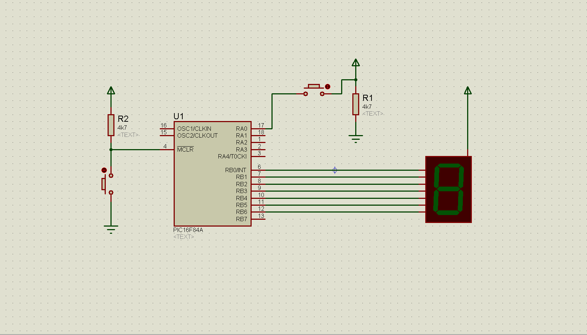

Project 11
program YOURNAME_P11
dim x as byte
sub function mask (dim num as byte) as byte
select case num
case 0 result = $c0
case 1 result = $F9
case 2 result = $a4
case 3 result = $b0
case 4 result = $99
case 5 result = $92
case 6 result = $82
case 7 result = $f8
case 8 result = $80
case 9 result = $90
end select
end sub
main:
trisa=11111
trisb=0
porta=0
portb=mask(0)
x=0
main1:
if porta.0=1 then
x=x+1
portb=mask(x)
delay_ms(5000)
if x>9 then x=9
end if
end if
goto main1
end.